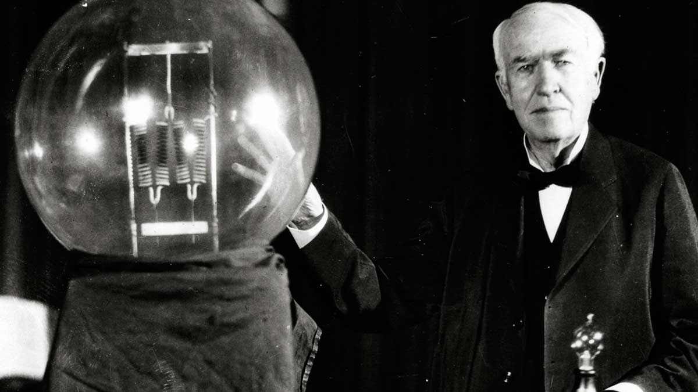
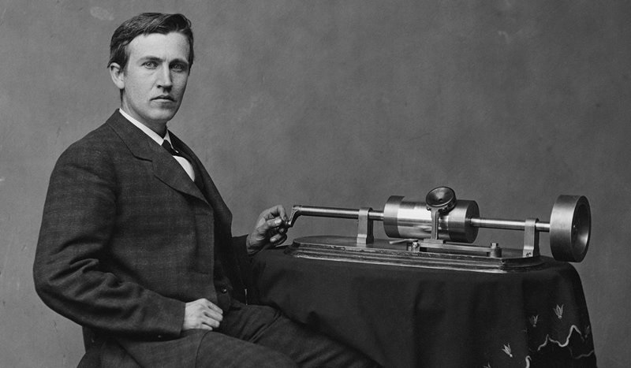
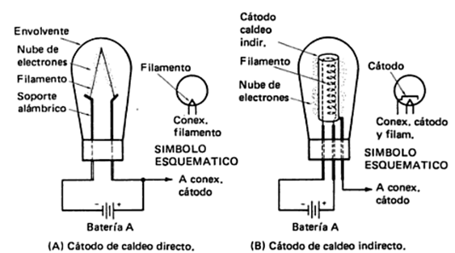

Inventos
-

Lámpara Incandescente
La lámpara incandescente es uno de los inventos más conocidos de Thomas Alva Edison. Fue una de las primeras fuentes de luz eléctrica prácticas y tuvo un gran impacto en la iluminación doméstica y la industria en general.
-

Fonógrafo
El fonógrafo permitía grabar y reproducir sonidos, lo que revolucionó la industria de la música y el entretenimiento.
-

Efecto Edison
El efecto Edison es el fenómeno de emisión de electrones por parte de un material calentado, descubierto por Thomas Alva Edison.